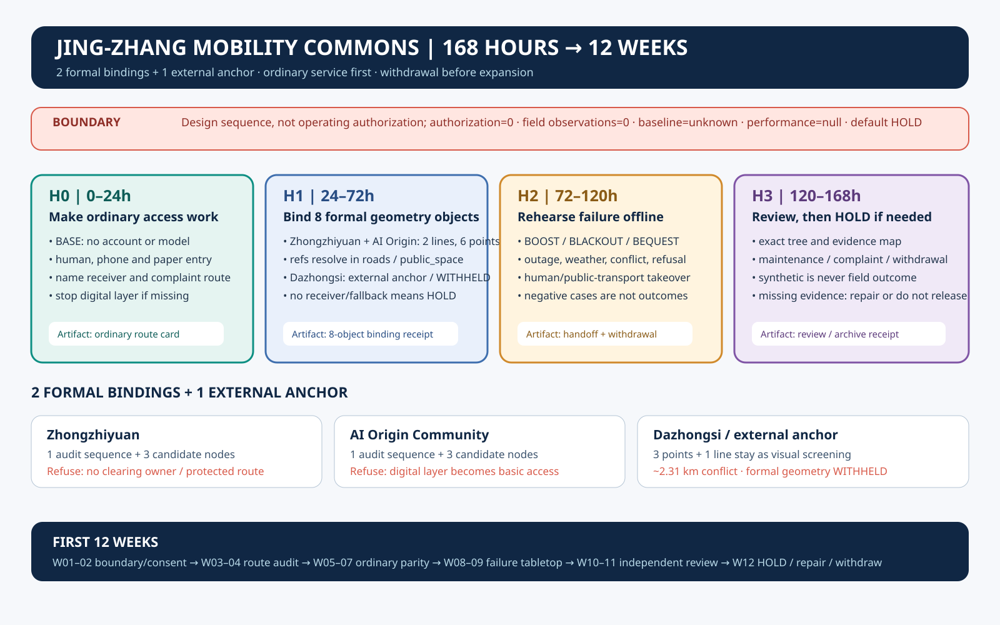
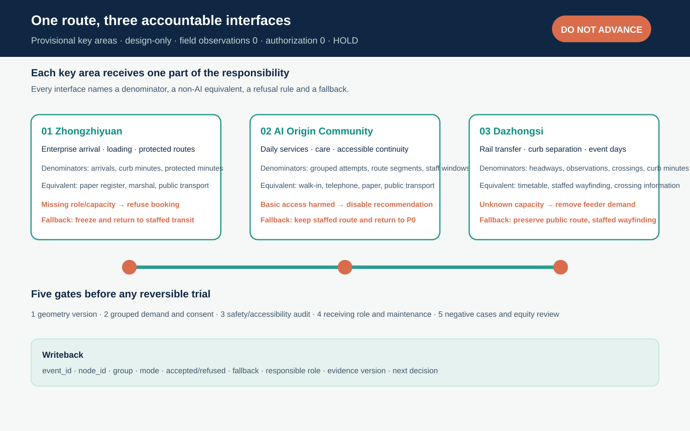
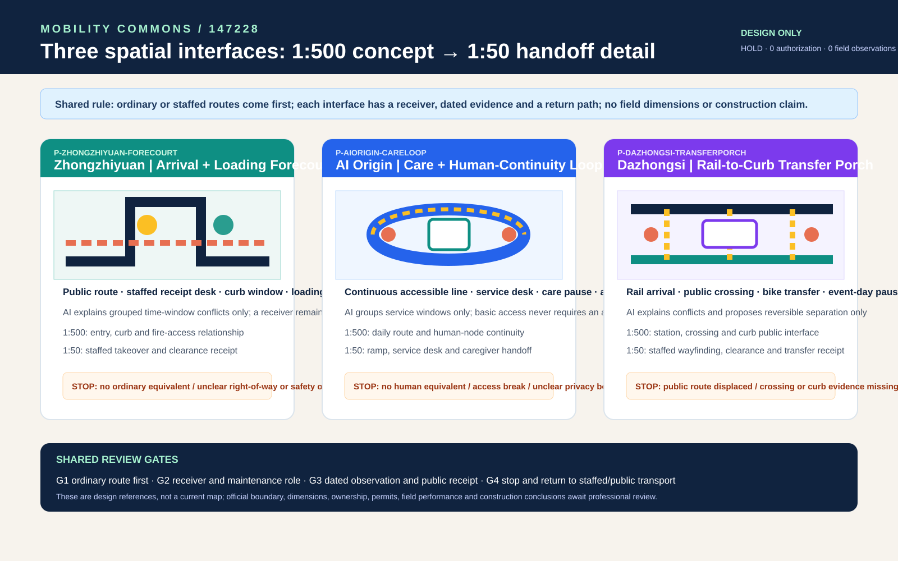
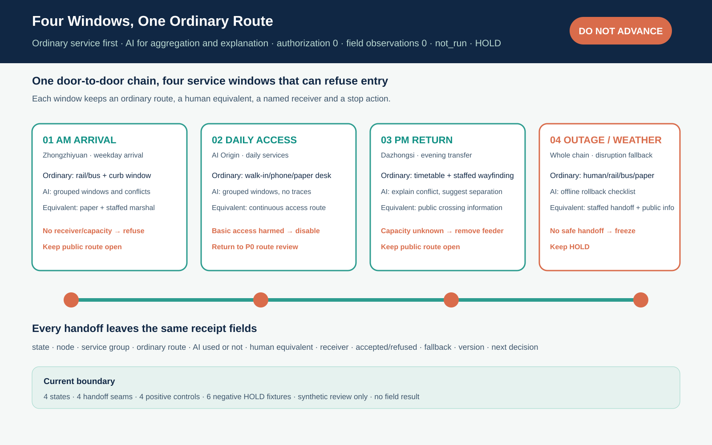

Jing-Zhang Mobility Commons: An Enterprise–Resident Mobility Operating System
A time-windowed curb ledger brings metro, bus, bicycle, walking/accessibility, cars, parking and loading into one auditable system, while external commuting, people flow and multimodal simulation remain explicit; future air mobility is only a conditional, reversible, ground-first experiment.
Jing-Zhang Mobility Commons: An Enterprise–Resident Mobility Operating System
Core proposition: the next move for the Jing-Zhang corridor is not another speculative road. It is a public mobility operating system that lets enterprises manage arrival, shuttle, freight and charging demand while residents retain continuous walking, accessible and human-service routes.
This is a new independent submission package. It does not modify the existing first-place project. The proposal uses one time-windowed curb ledger, two aggregated demand registers, three connection types, four service levels and five verification gates. Enterprise data is submitted as grouped time windows, not personal traces. Resident needs cover school, care, health, daily shopping, night return and accessibility. Metro and bus remain the structural backbone; bicycle and walking/accessibility provide the first/last mile; cars are managed for necessary trips, parking, loading, charging and emergency access; shared shuttles and AI recommendations are reversible feeder services. External commuting is kept in the OD boundary, and future air mobility is only a conditional experiment. All geometry remains provisional until official boundaries, right-of-way, traffic counts, ownership and field audits are available.
One-Page Executive Brief: Accept One Door-to-Door Chain Before Expanding Shared Feeders
An ordinary person is not a flow point in a model. At each step—leaving, transferring, encountering disruption, asking for help and returning home—they need an understandable choice. The first reversible pilot accepts one minimum chain: choose a public/accessibility or human route → request one mobility service → trigger human or rail/bus takeover when a transfer is missed, the network is offline, weather turns bad or a curb conflict occurs → freeze the booking and exit when the state is unsafe or unreachable → let an independent reviewer replay the evidence and decide whether to repair, expand or withdraw. This is not an operational claim. The current M-09 is only a local, offline, no-personal-data tabletop replay of four synthetic requests; performance_results=null and operational_status=not_authorized_not_run.
| Step | Space/service visible to an ordinary person | Evidence retained | Fail-closed action |
|---|---|---|---|
| 1. Choose | Station wayfinding, continuous walking/wheelchair route, human/phone/paper entry and shared-feeder candidate shown together | Choice, service window, accessibility-need category and version; no continuous personal trace | Keep an equivalent human route when digital access fails; do not open without one |
| 2. Request | Rail/bus transfer, shuttle/minibus candidate, curb loading or community service desk | Request ID, grouped service type, start/end window, responsible role and alternative route | Register only, without booking, when ownership, responsibility, capacity or consent boundaries are unknown |
| 3. Take over | After a missed transfer, outage, rain/snow, accessibility obstruction or curb conflict, a person points to rail/bus or a human route | Trigger, takeover person, handoff time, clearing action and complaint entry | Freeze automated booking and prefer human/public transport; stop if nobody can take over |
| 4. Exit | Signage, human desk and paper/phone complaint route allow rerouting, getting home or cancelling | Cancellation reason, alternative route, unresolved item and not_authorized_not_run state | Do not expand or report success when fire, accessibility, privacy or safety gates fail |
| 5. Replay | An independent reviewer replays one door-to-door chain and compares continue, repair or withdraw | Minimal log, grouped result, complaint-closure evidence, version and review decision | Return to P0 investigation and human service when evidence is missing or the slowest group worsens |
This table connects the design boards, curb ledger, M-09 fallback tabletop and P0/P1/P2 phasing to one acceptance entry point. PASS for four synthetic requests proves only that the state machine and rollback logic can be replayed; it does not prove real demand, accessibility performance, staffing, public acceptance or safety.
First 168 hours and first 12 weeks: turn “can this proceed?” into an exit receipt
High-scoring packages often compress a vision into a delivery chain that a reviewer can interrogate one step at a time. This version adds two time receipts, while keeping them explicitly as design contracts rather than completed work: visual/assets/mobility-first-168h.json binds 0–24, 24–72, 72–120, and 120–168 hours to the ordinary route, the three interfaces, failure tabletop, and independent review; visual/assets/mobility-first-12-weeks.json connects W01–02 boundary and consent, W03–04 route audit, W05–07 ordinary-service parity, W08–09 failure tabletop, W10–11 professional review, and W12 HOLD/repair/withdrawal.
Every window states four things: who receives the handoff, what evidence is retained, what stops the work, and which ordinary path remains after the stop. The “12 weeks” is therefore not an operating promise, and an offline replay is not field performance; authorization, field observation, and the local baseline remain zero or unknown. The default output of the first 168 hours is HOLD, a request for evidence, repair, or withdrawal—not service opening. The bilingual overview is assets/figures/mobility-release-chain.svg and .en.svg.

visual/assets/mobility-release-evidence-map.json binds seven review questions—ordinary-person journey, three spatial interfaces, delivery and maintenance, source boundary, governance, reversibility, and reviewer navigation—to concrete files; every dimension keeps an empty field_claims list. A reviewer can start at one board and follow the same path back to the JSON, drawings, assumptions, and negative fixtures, without mistaking “many files” for “already operating.”
Design Basis and Source List
The open-call requirements cover three spatial scales, three key areas, AI and mobility scenarios, an innovation ecosystem and reviewable drawings and data layers Source Source. The package uses the public provisional site package but replaces the narrative, road attributes, metrics, evidence register and visual boards with an enterprise–resident mobility focus. Both the site and key-area polygons declare official_boundary=false and geometry_role=provisional_constraint Spatial data Spatial data.
Beijing’s 14th Five-Year transport plan frames one-hour door-to-door trips, integrated rail/bus/walking/cycling, public-transport priority and smart transport as policy directions Source. A current Haidian road-parking service tender combines order management, guidance, patrol, equipment inspection, exception handling, backend operations and complaint response. It demonstrates that a curb is an operated asset, not merely a line on a map Source. A Haidian transport planning document requires transit-hub conditions, ground-floor public interfaces, bicycle interchange, emergency routes and traffic-impact review Source. None of these sources is a local baseline for this provisional study area.
Evidence is separated into known geometry values, unknown local baselines, design_target pilot gates and blocked conditions. Employer travel-demand-management research supports transit benefits, multimodal subsidies, flexible hours and guaranteed rides home, but its effects are context-dependent and are not copied as Haidian outcomes Source Source.
Three-Level Scope Framework
The regional layer studies the rail, bus, campus, enterprise and residential relationships around the Jing-Zhang corridor. The overall layer translates them into access chains, curb states, public-service interfaces, blue-green fallback and maintenance packages. The key-area layer tests one reversible operational package in each of Zhongzhiyuan, the AI Origin Community and Dazhongsi Depth Standard.
The three scales share the same provisional site_boundary, key_areas, land_use, buildings, roads, green_space, public_space, constraints and phasing layers. The approximately 11.41 km² area is a design-comparison value only Metric. A future official revision must trigger one coordinated re-render of all geometry, metrics, drawings and visual cards.
Coordinated Research Area: Industry and Future City Research
Enterprise side
Enterprise mobility desks submit grouped demand windows: approximate employee bands, entrances, shuttle periods, freight and loading windows, visitor peaks, night work and emergency needs. The system compares public transport, consolidated shuttles, cycling, walking and shared feeder options. It does not retain individual trajectories. Enterprises receive a service window rather than permanent public right-of-way, and they share responsibility for on-site guidance, cleaning, maintenance and complaint closure.
Resident side
Resident input records service types and time bands for school, care, health, shopping, night return and accessible travel. It does not require a continuous home-to-work trace. Offline, telephone, paper and human-service routes remain equivalent options. Results must be stratified by age, mobility, care load, night travel and enterprise affiliation; a single average satisfaction score cannot establish equity Source Source.
Managed future mobility
Autonomous or on-demand shuttles are treated as regulated feeders, not replacements for rail or unlimited vehicle supply. Research finds that shared autonomous vehicles can complement or compete with transit and may increase vehicle kilometres if supply is unmanaged Source Source. Every feeder therefore needs capacity, a time window, a responsible operator, an accessible human fallback and a stop condition.
Overall Design Area: Urban Renewal and Regulatory-Plan-Level Urban Design
The overall structure is a shared mobility loop, not a new closed road. Three connection types are used: stable rail/bus interchange, consolidated enterprise/shared feeder services, and human-first accessible walking. Four service levels are measured: route continuity, transfer reliability, orderly curb use and complaint closure. Curb-management research supports treating delivery, ride-hail, shared mobility and public events as competing demands that require joint public/private scheduling and responsibility Source.
Five ground modes and one conditional air experiment
The loop is layered instead of flattening every trip into one line: metro/rail carries the long-distance backbone and external commuting; bus adds coverage, night service and transfer resilience; bicycle handles station-to-campus and station-to-community access; walking and wheelchair access are the public base for every mode; and cars are managed for necessary trips, parking, loading, charging, drop-off and emergency access. Enterprise shuttles, on-demand minibuses and shared feeders must connect to rail/bus rather than add unmanaged vehicle supply Source.
Future air mobility is represented only as an air-mobility-candidate relationship node. Without written review of airspace, routes, airworthiness, operator, insurance, weather, fire, noise, emergency response and public participation, the package draws no operating route, promises no vertiport and claims no permit. If an experiment becomes eligible, it starts with ground transfer, accessible evacuation, human supervision, low frequency, reversibility and weather cancellation Source Source.
People-flow and multimodal simulation
People are the center of the simulation: enterprise employees, residents, carers, children, wheelchair users, visitors, logistics/maintenance staff, night workers and emergency responders receive separate grouped OD and time windows. No continuous personal trace is required. External commuting crosses the provisional boundary and must be recorded in P0 by origin/destination direction, metro, bus, bicycle, car, walking and shuttle mode, park-and-ride and cross-line transfer. It feeds external_commute_od_baseline and external_commute_generalized_cost_index as survey products, not guessed facts.
Scenarios include weekday AM/PM peaks, off-peak, event days, rain/heat, metro or bus outage, road/parking failure, and future-air comparisons with ground-only transfer and weather cancellation. Metro/bus inputs include schedules, station capacity, waiting and transfer buffers; bicycle inputs include parking, sharing and conflicts; car inputs include intersection queues, parking, loading, charging and emergency clearance; walking/wheelchair inputs include section width, crossings, gradients, care stops and accessible detours. SUMO is an open base for multimodal simulation, but local signals, station capacities, bicycle behaviour and pedestrian flows must be calibrated with field counts; software output is not a Haidian performance claim Source Source.
Optimization is hard-gate first and Pareto-based afterward. Safety, fire/emergency access, accessibility continuity, public-transport protection, privacy and human service are screened before comparing generalized cost, people-flow conflicts, car vehicle-kilometres, energy, external-commute reliability and worst-group gaps. The result is an explainable candidate set and an unknown multimodal_system_efficiency_index, not an uncalibrated claim that one score is “the highest overall efficiency” Metric Metric.
The first intervention is reversible: signs, wayfinding, rain shelters, seats, bicycle parking, accessible ramps, enterprise mobility desks, human service counters and time-window curb markers. The package does not claim a new bridge, road widening, parking supply, building height, floor-area ratio or investment amount. All land-use and building relationships remain conceptual and are tied to the machine layers Spatial data Spatial data Depth Depth.
Detailed Design of Key Areas
Zhongzhiyuan tests enterprise arrival, shuttle consolidation and loading. The AI Origin Community tests daily resident access, care and a genuinely equivalent human route. Dazhongsi tests rail transfer, bicycle parking, loading and event-day public-space management. Each area has an accountable enterprise or community operator, a transport reviewer and a maintenance owner; no partner, permit or existing operation is claimed Metric Depth.
The responsibility-transfer table maps seven resource units to eight affected groups and checks a named receiver, ordinary equivalent, refusal condition and write-back field for each unit. run-mobility-responsibility-transfer.js is a supplemental contract audit, not one of the four formal self-check gates; it additionally rejects duplicate, empty, unknown or unmapped groups. test-mobility-responsibility-transfer.js replays all four negative fixtures. A pass proves only that the audit contract is complete; it proves no field coverage, authorization, user observation or transport performance Spatial data Spatial data Spatial data.
The first pilot is a small morning and evening window in Zhongzhiyuan, an accessible daily-route comparison in the Origin Community, and a rail/curb separation rehearsal at Dazhongsi. Enterprise bookings cannot become permanent community bans. Shared vehicles cannot occupy a fire route, accessible path or emergency corridor.
Readback order for the three interfaces
The three key areas share one candidate service route, while each receives a different responsibility. Zhongzhiyuan first checks enterprise arrival and loading denominators. The AI Origin Community first checks grouped daily services and an equivalent accessible route. Dazhongsi first checks headways, crossings and curb observation windows. Each interface states a refusal rule and a human fallback. Missing field records keep the package at HOLD Spatial data Depth.
| Interface | Field denominators | Non-AI equivalent | Action when evidence is missing |
|---|---|---|---|
| Zhongzhiyuan arrival and loading | arrival attempts, available curb minutes, protected fire/access minutes | paper register, staffed marshal, public transport | refuse booking, freeze and return to staffed transit |
| AI Origin daily access | grouped attempts, continuous route segments, staffed service windows | walk-in, telephone, paper, public transport | disable recommendation, keep the staffed route and return to P0 |
| Dazhongsi rail transfer | headways, transfer observations, crossing windows, event-day curb minutes | timetable, staffed wayfinding, public crossing information | remove feeder demand, preserve the public route and dispatch staff |
This is a design-interface atlas, not a current map. It places the three key areas, service groups, denominators, refusal rules and fallbacks on one review surface. Real route observations, responsibility handoffs and authorization remain zero until official geometry and field audits are available Spatial data.

Three spatial interface prototypes: from “a route exists” to “enter, hand over, and withdraw”
The route ledger answers where a service passes, but a reviewer also needs to see how a person enters, who receives a failure, and where the service returns. This revision therefore gives each key area one spatial interface prototype for professional deepening: Zhongzhiyuan is an arrival and loading forecourt, the AI Origin Community is a care and human-continuity loop, and Dazhongsi is a rail-to-curb transfer porch. 1:500 and 1:50 are review-level labels, not construction dimensions. The board describes only the relationship between the public route, staffed node, curb window, receipt and stop action Spatial data Depth.
| Prototype | Ordinary service first | AI is limited to | Stop when evidence is missing |
|---|---|---|---|
| Zhongzhiyuan arrival and loading forecourt | public transport, walk-in, staffed wayfinding, paper register | explain grouped time-window conflicts | refuse booking when no ordinary equivalent, a fire/access conflict or receiver is missing |
| AI Origin care and human-continuity loop | walk-in, telephone, paper, public transport, staffed service | group service windows and prepare fallback options | disable recommendations when basic access requires an app, the accessible route breaks or privacy is unclear |
| Dazhongsi rail-to-curb transfer porch | rail, bus, public crossing, staffed wayfinding, bike transfer | explain transfer conflicts and offer reversible separation | freeze feeder demand when the public route is displaced or crossing/curb evidence is missing |
All three prototypes share four gates: ordinary route first, a named receiving and maintenance role, dated observations with public readback, and immediate return to staffed or public transport after failure. run-mobility-interface-prototypes.js rejects authorization, field observations, numeric dimensions, an empty ordinary service list or non-empty field_claims; its negative fixtures make sure a concept board cannot be promoted into a current-state or construction claim Spatial data Spatial data.

One-day continuity receipt | One ordinary service chain across four windows
A door-to-door chain must remain understandable beyond one peak period. The package places weekday arrival, daily access, evening transfer and outage or weather fallback in one receipt. Rail, bus, walking, human, telephone and paper routes stay available first; AI only groups demand, explains conflicts and prepares a rollback list. Missing a receiver, an equivalent route or a dated restoration record keeps the service at HOLD Spatial data Source Depth.

| Window | Ordinary service comes first | AI is limited to | Action when evidence is missing |
|---|---|---|---|
| Weekday arrival | Rail/bus, protected curb and staffed guidance | Group arrival windows and flag curb conflicts | Refuse booking when receiver or capacity is missing |
| Daily access | Walk-in, telephone, paper and a continuous accessible route | Group service windows without continuous traces | Disable the recommendation and return to P0 |
| Evening return | Timetable, public crossing information and staffed wayfinding | Explain transfer conflicts and suggest reversible separation | Remove feeder demand when capacity or responsibility is unknown |
| Outage, weather and maintenance | Human, rail, bus, paper and telephone fallback | Organize an offline freeze, reroute and restore list | Keep HOLD when a safe handoff or dated record is missing |
mobility-continuity-receipt.json fixes four windows, four handoff seams, twelve receipt fields, four positive controls and six negative fixtures. run-mobility-continuity-receipt.js and its regression cases prove only that the contract can be checked offline; they do not prove field continuity. Authorization remains 0, field observations remain 0, the result remains not_run, and performance_results=null.
To make “what remains after AI is unplugged” a spatial acceptance test rather than a slogan, each key area now has a BASE → BOOST → BLACKOUT → BEQUEST public-baseline contract. Zhongzhiyuan leaves a protected route, paper curb register and maintenance card; the AI Origin Community leaves a static/tactile route card, human service directory and correction log; Dazhongsi leaves an interchange map, event-day curb protocol and public withdrawal notice. The five P0–P4 stages define a debugging sequence only and carry no field authorization. The supplemental runner checks three prototypes, four states, five stages and the HOLD boundary; a pass proves contract completeness, not a real route, staff, capacity or performance Spatial data Spatial data Spatial data.
AI Innovation Ecosystem, Personas, and AI+ Scenarios
Personas include enterprise mobility coordinators, residents and carers, wheelchair users, rail and bus operators, logistics and maintenance staff, school and community workers, night-shift staff and transport/privacy/fire professionals. AI aggregates demand, explains conflicts and prepares rollback checklists; it cannot permanently lock a public route.
Three industry tests structure the pilot: enterprise demand aggregation using grouped data; an equal-service comparison between AI, human, telephone and paper routes; and curb/communication-loss fallback during peak, event, snow or rain scenarios. Ten scenario cards cover consolidated enterprise shuttles, public-transport benefits, guaranteed night return, loading reservations, accessible daily routes, the last 500 metres to rail, event-day separation, degraded service and complaint-to-maintenance closure Source Standard.
Land Use, Building Scale, and Retain-Renovate-Demolish Strategy
The existing conceptual building footprints occupy about 2.72% of the provisional study area; this is not a statutory building-coverage ratio Metric Metric. Existing public services, transit entrances, fire routes, accessible paths and mature shade are retained. Reversible renewal upgrades entrances, waiting, bicycle parking, ramps, information signs and service counters. Demolition is not proposed without survey, ownership, structure, fire, utility and community evidence Source Depth.
Transport, Rail, Municipal Infrastructure, and Public Services
The conceptual network includes one north–south relationship line of about 9.60 km, three east–west links and a slow-mobility relationship network of about 13.01 km. These are design lengths, not engineered road centrelines or proof of current continuity Metric Metric Metric. Each segment needs a future audit of section, signals, crossings, entrances, gradients, tactile paving, lighting, shade, loading, fire access, drainage, utilities, ownership and maintenance.
The curb ledger uses open, booked, service, human-only and emergency states. Every state change has a responsible person, start and end time, service purpose, clearing action, alternative route and complaint entry. Enterprise data is grouped; resident data is service-based. The four operational metrics are accessible-route completion, first/last-mile reliability, curb-window compliance and complaint-closure hours Source Source. All local demand, occupancy, delay, passenger, charging and complaint values remain unknown until measured.
Metro and bus are the backbone. Enterprise shuttles and on-demand vehicles feed that backbone. Parking and loading are managed as timed services rather than solved only by more supply. Rain, snow, lighting, charging, information signs and maintenance are entered into one municipal asset register. The Haidian transport document and slow-mobility procurement material provide the checklist for hub, interchange, emergency and construction review Source Source Depth Depth.
If an air-mobility experiment becomes eligible, it remains a controlled add-on to the ground system. Metro/bus transfer, walking/wheelchair paths, fire egress, noise and the quiet residential interface must be protected before airspace and operating permissions are reviewed. air_ground_transfer_reliability, throughput, cancellation, weather windows, noise, emergency response and insurance responsibility remain unknown. Beijing’s low-altitude action plan is policy context; the CAAC unmanned-aircraft regulation is a safety and operating-responsibility gate; neither is a local flight or construction permission Source Source Source.
Design-scenario simulation (transparent sandbox, not a baseline)
Before field OD, station capacity, signals, people flow and curb counts exist, visual/assets/movement-simulation.json runs an interpretable 1,000-person normalized design unit: S0 unmanaged peak, S1 multimodal curb coordination, S2 air candidate blocked by regulatory gates, and S3 ground fallback in extreme weather. The package also includes the dependency-free deterministic runner visual/assets/run-mobility-simulation.js; it recomputes the declared design-unit queues and service supply without upgrading papers or synthetic values into a Haidian baseline. S1 is only a provisional design candidate after the proposed hard-gate screen; generalized cost, transfer reliability, people-flow conflicts, external-car inflow, worst-group gap and energy are illustrative inputs, not current Haidian performance. The board exposes the chain: hard gates first, Pareto comparison second, local calibration last Metric Metric Standard.
The model objects are explicit rather than being a mode checklist: the 1,000-person design unit contains 380 residents, 450 enterprise employees, 60 carers/children, 50 visitors, 40 logistics or maintenance workers and 20 night-shift workers. Five trip_leg_templates make external enterprise commuting, resident daily services, enterprise-shuttle transfers, logistics/loading and ground-first air fallback inspectable. The network models metro trains (180 persons per vehicle, 10-minute headway), buses (60 persons per vehicle, 12-minute headway), bicycle parking, car curb service, a continuous walking/wheelchair stream and an air candidate held behind a gate. At 60-second steps it records location, mode, queue, vehicle occupancy, transfer status, curb state, conflicts and accessibility flags, then reports peak queues, station/vehicle load, transfer wait, car curb queues and worst-group gaps. Reviewers can run node visual/assets/run-mobility-simulation.js to recalculate mode shares, service supply, queues and calibration fields offline; the values in model_analysis.derived_readouts remain synthetic sensitivity outputs, not field observations Source Source Source.
In this normalized sandbox, the unmanaged peak produces a modeled peak curb queue of 86 cars and a station-gate load ratio of 1.05; the multimodal curb candidate produces 0 cars and 0.88; the weather ground fallback produces 47 cars and 0.96. This points to station gates, bus-stop capacity, curb service and accessible crossings as the first calibration targets, not to a construction conclusion. Following open activity/agent-based methods, formal calibration must compare mode share, road/curb volume, door-to-door time, trip distance and grouped accessibility—not only a single efficiency score Source Source. Dated cross-boundary OD, headways, sections, parking, conflicts and fire/accessibility review must replace the design inputs before rerunning or claiming performance.


Blue-Green Network, Public Space, and Urban Character
Blue-green space provides shade, rest, rain fallback and a safer night interface. The conceptual green ratio is about 12.34% and public-space ratio about 7.33%; neither proves ecological, thermal or drainage performance Metric Metric. Public counters, transit entrances, waiting, bicycle parking and green edges should share shelter, seats, lighting, water and accessible information without blocking wheelchair turns or fire access.
The hard boundaries are: do not send people into ponding routes during storms; provide a human alternate route during heat; and reduce unnecessary equipment and lighting during dark or ecologically sensitive periods. Beijing walking/cycling and accessibility sources support continuity and maintenance requirements Standard Standard Source.
Renewal Projects, Implementation Policy, and Phasing
Implementation–operation contract (conceptual interface, not a commitment)
To make the delivery path auditable, every phase names participating roles, acceptance metrics, human fallback, and a stop/withdrawal rule. P0 is a joint inventory by site/data stewardship, transport/accessibility review, and community liaison roles; P1 is supervised by enterprise mobility, resident/carer observation, rail/bus operations, field maintenance and independent safety/privacy review roles, using accessible-route completion, first/last-mile reliability, curb-window compliance and complaint-response records; P2 can be considered only after traffic, safety, accessibility, privacy, insurance, procurement and maintenance evidence is complete. If a metric remains unknown, consent or responsibility is missing, a hard gate fails, or complaints cannot close, the system returns to human/public-transport/telephone-paper fallback, freezes reservations and withdraws movable equipment. These are proposed responsibility interfaces, not confirmed institutions, contracts, funding or permits Depth.
To keep “fallback” from remaining a slogan, this package narrows the existing M-09 storm/outage degradation card into one minimum offline tabletop rather than claiming a new operated scenario. visual/assets/mobility-tabletop-contract.json fixes four synthetic service requests, four trigger events and five rollback actions; node visual/assets/run-mobility-tabletop.js --check replays six checks with no network, personal data, external system or persistent state, producing mobility-tabletop-evidence.json. The local rehearsal reports 4/4 requests retaining human/public-transport fallback, reservations frozen, 6/6 checks passed and 5/5 rollback steps replayed. It proves only that state, stop and rollback logic are reviewable—not real staffing, accessibility performance, public acceptance, service availability or safety. performance_results=null and operational_status=not_authorized_not_run, so the synthetic PASS cannot advance P1/P2 or claim implementation Spatial data Spatial data Spatial data.
P0 inventories assets, demand, curbs, accessible routes and complaints. P1 runs small reversible tests for two enterprise windows, one resident daily chain and one rail transfer chain. P2 considers conditional feeder expansion only after traffic, fire, accessibility, privacy, ecology, insurance, procurement, operator and maintenance evidence is signed. The service-tender logic of asset IDs, patrol, equipment checks, exception handling and complaint response is translated into every mobility asset Source Depth Depth.
The implementation loop is register → pilot → review → expand or stop. Operators sign a reversible service agreement; residents keep public paths and human service. An AI recommendation may always be rejected by an on-site person.
Metrics, Area Recalculation, and Compliance Matrix
The package separates file-readable geometry, unknown local baselines and pilot targets. Known values include the provisional area, three key areas, building footprint, green/public ratios and design relationship lengths Metric Metric Metric Metric Metric. Unknown values include enterprise commute demand, external commute OD, resident access, employer multimodal trip rate, parking occupancy, curb compliance, transfer reliability, accessible-route completion, people-flow conflicts, complaint closure, workplace charging gap, multimodal system efficiency, mode-transfer reliability and air-ground transfer reliability.
Pilot targets are not current outcomes: accessible-route completion at least 0.95, transfer reliability at least 0.85, curb-window compliance at least 0.90, a first complaint response within four hours and a status update within 24 hours Metric Metric Metric Metric. Five gates cover authoritative geometry, consented demand, safety, responsibility and equity. The compliance, standards and design-depth matrices bind these claims to the proposal, GeoJSON, drawings and self-check Standard Standard Depth Depth.


Risk, Copyright, and Compliance
This package does not replace right-of-way confirmation, traffic-impact assessment, parking contracts, fire review, accessibility review, construction drawings, operating permits, data compliance, insurance or procurement. The main risks are enterprise demand displacing resident access, unmanaged on-demand vehicles adding traffic, unmaintained curb states, unowned complaints and digital exclusion. Each has a rollback: human service, public transport, paper/telephone access, removable equipment, paused reservations, public aggregate incident summaries and a next review date Source Source Depth.
Government and tender sources establish policy and responsibility frameworks; papers establish methods and cautions; OSM and provisional geometry only support background screening and design relationships. No source is used to claim a local capacity, enterprise partnership, station performance, accident rate, satisfaction improvement or health outcome.
References
The source register records access date, use and non-use boundaries for the official transport plan, Haidian tender and planning evidence, employer TDM research, curb-management research, shared-mobility research, multimodal simulation documentation, air-mobility methods and the public site package Source Source.
Additional method and policy entries are BEIJING-LOW-AIR-ECONOMY-2024, CAAC-UAV-REGULATION-2024, SUMO-MULTIMODAL-DOCS, MULTIMODAL-TRAFFIC-REALITY-2025, UAM-BEIJING-MULTIMODAL-2024 and UAM-PUBLIC-TRANSIT-2023; they are not local baselines or permissions.
Boundary statement: this is an auditable concept and reversible pilot framework for enterprise–resident mobility. It is not an approved plan, road-opening announcement, parking permit, enterprise agreement, capacity proof, health claim or construction commitment. The existing first-place project remains untouched.